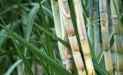
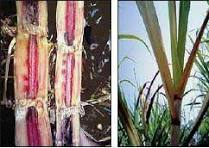

Sugarcane is a tropical and subtropical crop grown for its high sugar content. It belongs to the grass family and is a vital source of sugar and other by-products like molasses and ethanol.
Sugarcane cultivation has a rich history and plays a crucial role in the global sugar industry. The sweet juice extracted from sugarcane is not only used for sugar production but also serves as a raw material for various industries.
Sugarcane is typically grown in tropical and subtropical regions with warm temperatures. It requires well-drained, fertile soil and abundant sunlight. The crop is propagated through cuttings known as setts, and it takes about 10-24 months to mature.
Sugarcane cultivation involves several stages, including land preparation, planting, irrigation, and pest control. The crop requires careful management of water resources and nutrients to ensure optimal growth and sugar yield.
There are several varieties of sugarcane, each with its own characteristics suited for different climates and uses. Common varieties include Co 86032, CoS 767, NCo 310, and many more.
Farmers choose sugarcane varieties based on factors such as climate, soil conditions, and intended end-use. Some varieties are specifically bred for higher sugar content, while others may be resistant to diseases prevalent in certain regions.
Sugarcane prefers well-drained soil with good fertility. Sandy loam and clayey loam soils are ideal. Adequate organic matter in the soil is essential for healthy growth. The soil pH should be slightly acidic to neutral.
Proper soil management is crucial for sugarcane cultivation. Farmers may perform soil tests to assess nutrient levels and adjust fertilization practices accordingly. Maintaining the right soil structure and pH contributes to the overall health of the crop.
Sugarcane is susceptible to various pests and diseases that can affect its growth and yield. Common pests include sugarcane aphids and white grubs. Additionally, diseases like smut, rust, and red rot can impact the crop.
Farmers employ integrated pest management strategies, including the use of natural predators and resistant varieties, to control pests. Regular monitoring helps detect and address diseases before they spread.
Sugarcane is usually ready for harvest when it reaches its optimum sugar content. Harvesting involves cutting the mature sugarcane stalks close to the ground.
The harvested sugarcane is then transported to sugar mills for processing. The extracted juice undergoes multiple stages, including clarification, evaporation, and crystallization, to produce sugar. By-products like molasses and ethanol are also obtained during the processing.
Sugarcane cultivation has a significant global impact, contributing to the economies of many countries. Major sugarcane-producing nations include Brazil, India, China, Thailand, and Australia. The crop's versatility extends beyond sugar production, with applications in biofuel and various industries.
As a renewable resource, sugarcane plays a role in sustainable agriculture. Ongoing research focuses on enhancing sugarcane varieties for increased sugar yield and disease resistance, ensuring the crop's continued importance in the agricultural landscape.